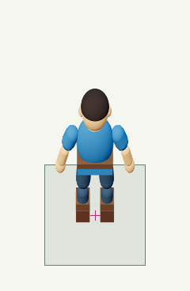
Eight neutral directions
Fixed 192×320 runtime frame, 128px square ground cell, projected root (96,248). Crosshairs show the authored root. These previews show the source stages without fitting feet or silhouette bounds.
Direct 3D control
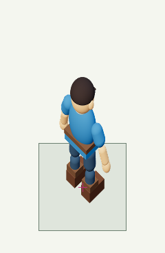
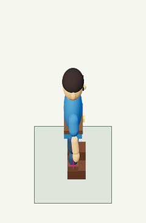
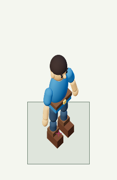
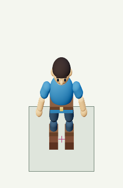
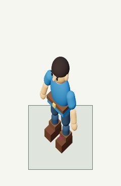
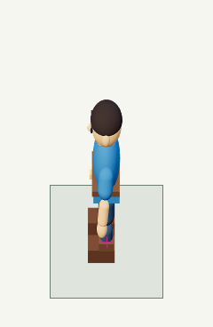
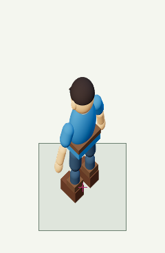
AI reskin candidate


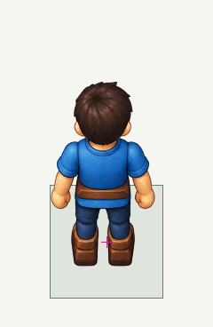
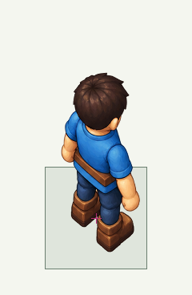
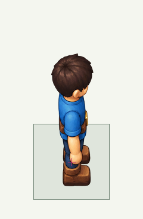
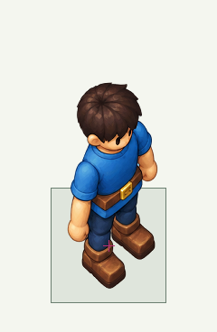
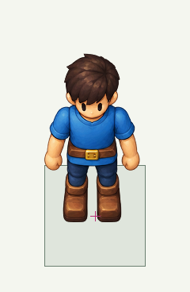
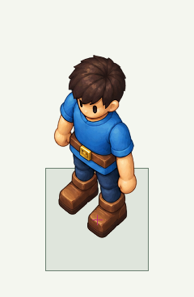
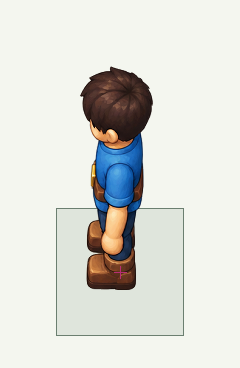
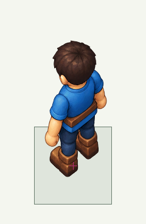
Retained source
Untouched generated PNG · Floor-free 3D edit target · Separate calibration capture